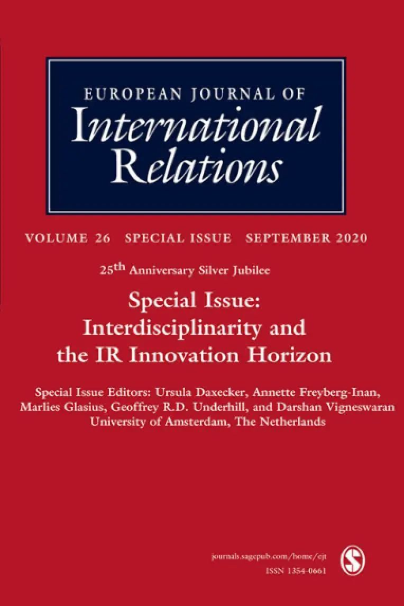

收录于合集 #新刊速递 123个

期刊简介

European Journal of International Relations,《欧洲国际关系杂志》（EJIR）是欧洲政治研究联盟国际关系常设小组（the Standing Group on International Relations of the European Consortium for Political Research, SGIR）的同行评审旗舰期刊, 由SGIR和欧洲国际研究协会组成的联合委员会共同管理。根据Journal Citation Reports显示，2019年该期刊的影响因子为3.474。
本期为European Journal of International Relations的25周年特刊——跨学科与国际关系的创新视野(Interdisciplinarity and the IR Innovation Horizon)。
本期编委
【编译】 李源 任潇依 张曼娜 陈晓茹 赵怡雯
【校对】 常佳艺 肖龙
【审核】 金磊 李源
【排版】 苏语涵
本期目录
1. Introduction: Interdisciplinarity and the International Relations event horizon
导言：跨学科与国际关系的事件视野
2. Racial sovereignty
种族主权
3. Bad influence: social networks, elite brokerage, and the construction of alliances
不良影响：社交网络、精英中介与联盟建设
4. Domestic courts, transnational law, and international order
国内法院，跨国法律和国际秩序
5. “The persistent myth of lost hegemony,” revisited: structural power as a complex network phenomenon
重新审视霸权丢失的神话：将结构权力视作一个复杂的网络现象
摘要译文
01
导言：跨学科与国际关系的事件视野
【题目】 Introduction: Interdisciplinarity and the International Relations event horizon
【作者】 Ursula Daxecker，阿姆斯特丹大学助理教授；Annette Freyberg- Inan，阿姆斯特丹大学助理教授；Marlies Glasius，阿姆斯特丹大学教授；Geoffrey Underhill，阿姆斯特丹大学教授；Darshan Vigneswaran，阿姆斯特丹大学助理教授。
【摘要】 这篇导言为《欧洲国际关系》的周年特刊进行了背景介绍。早在2013年《欧洲国际关系》特刊（国际关系理论的终结？）的编辑们就问道，国际关系中范式的“理论混杂”是否是深层且无法解决的？这篇导言认为，在“通识性”和专业性的国际关系期刊之间仍然存在着非常多的对话，更新与扩展远比边界本身更为重要。同时，国际关系领域也在吸收诸多其他社会科学学科知识的过程中不断扩展。然而，国际关系与跨学科分析的关系却存在问题，它常常把其他领域长期以来争论不休的东西看作是“新”的，并反过来通过将其他领域的见解融入到现存国际关系范式中，使其得以“内化”。因此，本期特刊首先聚焦于国际关系领域的“我们”未从其他学科中看到的东西，进而论述国际关系学者如何更好地运用“跨学科”来确保该领域未来的活力与创新。本文认为，在这种情况下，（我们）需要批判性和开放性地努力参与这些工作，同时跨学科的概念本身也呈现出新的形式。
This Introduction contextualises this special anniversary issue of the journal. The Editors of a previous 2013 special issue of the EJIR (The End of International Relations Theory?) asked if the paradigmatic “theoretical cacophony” in IR was deep and irresolvable. We argue that there is still very much a conversation going on across ‘generalist’ and specialised IR journals, and that renewal and broadening is more important than boundaries per se. Meanwhile the field of International Relations has continued to broaden, absorbing much from other social science disciplines in the process. Yet IR has a problematic relationship with interdisciplinarity, often discovering as ‘new’ what other fields have long debated and in turn ‘domesticating’ these insights from other fields by fitting them into existing IR paradigms. This special issue is thus aimed above all at what ‘we’ in IR are not seeing from other disciplines, and we go on to argue how IR scholars might best employ ‘transdisciplinary’ insights to ensure the future dynamism and innovation of the field. We argue that in this context, a special effort of critical and open engagement with work that makes us uncomfortable is required and that the very notion of inter-disciplinarity takes on a new form.
【编译】 李源
【校对】 常佳艺
【审核】 金磊
02
种族主权
【题目】 Racial sovereignty
【作者】 Kerem Nisancioglu，伦敦大学亚非学院讲师。
【摘要】 本文将探讨如何使国际关系（IR）更好地针对种族与主权之间尚未被充分探讨的构成性关系进行概念化与分析。本文首先对主权的“正统解释”(orthodox account)进行批判性分析，并指出该解释经由以下两种方式导致了种族和主权在分析层面和历史层面的分离：（1）根据殖民掠夺的历史进行抽象处理；（2）将种族主义视为国际关系中已解决的问题。针对正统解释，本文发展出“种族主权”(racial sovereignty)这一分析模式，它可以：（1）克服正统解释中历史的抽象；（2）揭示种族主义在国际政治中具有的持续重要性。本文将分三步提出该论点：首先，本文介绍了17世纪弗吉尼亚州殖民问题当中“定居者”(settlers)和“本地人”(natives)之间斗争的历史，本文认为，这段历史揭示了掠夺(dispossession)和种族化(racialisation)在英国殖民者意图在美洲建立主权的相关尝试中所占据的中心地位；第二，通过批判反殖民传统中“承认”的概念，本文认为弗吉尼亚州的经历不仅具有历史价值和地方重要性，也有助于我们更好地理解种族主义具有的持续性和结构性。随后，本文表明在英国脱欧的背景下，当代主权主张是如何揭示一系列在其他方面被掩盖的殖民和种族关系的。最后，本文总结道，针对种族主权的叩问不仅具有历史价值，对于我们了解当今世界也具有政治意义。
This article explores how International Relations (IR) might better conceptualise and analyse an underexplored but constitutive relationship between race and sovereignty. I begin with a critical analysis of the ‘orthodox account’ of sovereignty which, I argue, produces an analytical and historical separation of race and sovereignty by: (1) abstracting from histories of colonial dispossession; (2) treating racism as a resolved issue in IR. Against the orthodox account, I develop the idea of ‘racial sovereignty’ as a mode of analysis which can: (1) overcome the historical abstractions in the orthodox account; (2) disclose the ongoing significance of racism in international politics. I make this argument in three moves. Firstly, I present a history of the 17th century struggle between ‘settlers’ and ‘natives’ over the colonisation of Virginia. This history, I argue, discloses the centrality of dispossession and racialisation in the attendant attempts of English settlers to establish sovereignty in the Americas. Secondly, by engaging with criticisms of ‘recognition’ found in the anticolonial tradition, I argue that the Virginian experience is not simply of historical interest or localised importance but helps us better understand racism as ongoing and structural. I then demonstrate how contemporary assertions of sovereignty in the context of Brexit disclose a set of otherwise concealed colonial and racialised relations. I conclude with the claim that interrogations of racial sovereignty are not solely of historical interest but are of political significance for our understanding of the world today.
【编译】 任潇依
【校对】 肖龙
【审核】 李源
03
不良影响：社交网络、精英中介与联盟建设
【题目】 Bad influence: social networks, elite brokerage, and the construction of alliances
【作者】 Selim Can Sazak，布朗大学政治科学系研究生。
【摘要】 如果所有国家都以生存为目标，为什么一些国家会加入无利可图的联盟呢？国际关系（IR）理论的传统观点认为：信息的不完善与系统的复杂性会导致误判。这种解释回避了一个问题：既然所有失败的联盟都基于误判，所以困惑不在于是否会出现误判，而是（决策者）为什么会误判。本文通过借鉴近年来网络理论和人际信任的研究成果，提出了另一种解释：联盟不是出于战略需要而凭空形成的实体，而是将来的同盟国中的政治、军事和商业精英在跨国社交网络中互动的产物。这种互动使联盟成为可能，通过相互交往或旧交情而联系在一起的人们能够建立相互信任，并对彼此的意图与能力具有主观确定性，这便指向了联盟行为中曾被忽视的一种机制：中介（brokerage）。本文结合基于理论的档案研究和社交网络分析，运用奥斯曼帝国与德国联盟的历史证据，论证了德国驻奥斯曼帝国军事使团团长科尔玛·冯·德·戈尔茨（Colmar von der Goltz）在世纪之交的两国关系和在一战中两国最终结成的同盟中的中介角色。本文在深化我们对联盟行为的理解，并在世界舞台上战略竞争日益加剧之际，就地缘经济竞争与相互依赖关系的武器化提供政策见解的同时，指出了一种连接国际关系、历史学和社会学的潜在方法。
If all states want to survive, why do some of them enter unpropitious alliances? International Relations (IR) theory’s conventional answer is that imperfect information and systemic complexity result in miscalculation. This explanation begs the question: any alliance that fails is a miscalculated one, so the puzzle is not whether but why such mistakes are made. This article imports from recent scholarship on network theory and interpersonal trust to offer an alternative explanation. Alliances are not entities ethereally formed out of strategic imperatives, but products of interactions within transnational social networks of political, military, and business elites in the prospective allies. Such interactions enable alliances because people who are connected to each other through mutual association or previous exchanges develop mutual trust and gain subjective certainty about each other’s intentions and capabilities, which points at a previously ignored mechanism in alliance behavior: brokerage. In a case study that combines theory-based archival research and social network analysis, this article uses historical evidence on the Turco-German alliance to empirically demonstrate the brokerage role Colmar von der Goltz, the head of the German military mission to the Ottoman Empire, played in the two countries’ relations at the turn of the century and their eventual alliance in the First World War. The analysis points at a potential means of bridging IR, history, and sociology while expanding our understanding of alliance behavior and providing policy-relevant insights on geo-economic competition and the weaponization of interdependence at a time of growing strategic rivalry on the world stage.
【编译】 张曼娜
【校对】 常佳艺
【审核】 李源
04
国内法院，跨国法律和国际秩序
【题目】 Domestic courts, transnational law, and international order
【作者】 Filiz Kahraman，多伦多大学政治学助理教授；Nikhil Kalyanpur，普林斯顿大学博士后研究员；Abraham L. Newman，乔治城大学外国服务与政府管理学院教授。
【摘要】 本文重新探讨了法律与国际秩序之间的关系。基于与跨国法有关的法律研究，作者认为国内法院是国际政治变革的内生场所。国家法院通过制定新规则，裁定跨国争端和限制国家主权塑造国际秩序。作者通过更新三种核心的国际关系理论论战，解释国家法院创造新的政治机会的方式。认识到国内法院作为全球评判员的作用，可以增进对政权复杂性和国际争端择地行诉的了解。通过重新解释传统国际法的各个方面，并进行跨界对话，国内法院挑战了我们对国际传播和司法化的现有理解。通过重新定义国家权威和主权的界限，国家法院为冲突与合作创造动力。跨国法律的视角说明国内和国际领域之间的疏松性，突出强调国内法院如何成为行动于主流分析的各个层面的国家和非国家行为者的裁决者。本文呼吁学者们超越国家法律体系的分析层面，而将国内法院视为国际秩序的共同创造者。
This article revisits the relationship between law and international order. Building on legal research concerned with transnational law, we argue that domestic courts are endogenous sites of international political change. National courts are constitutive of international order by generating new rules, adjudicating transnational disputes, and bounding state sovereignty. We illustrate the ways in which national courts create new political opportunities by updating three core international relations theory debates. Recognizing the role of domestic courts as global adjudicators enhances our understanding of regime complexity and international forum shopping. By re- interpreting aspects of conventional international law, and engaging in cross- border dialogue, domestic courts challenge our understanding of international diffusion and judicialization. By redefining the boundaries of state authority and sovereignty, national courts create potential for conflict and cooperation. A transnational law perspective illustrates the porous nature between domestic and international spheres, highlighting how domestic courts have become adjudicators for state and non-state actors that operate across mainstream levels of analysis. Our approach calls on scholars to move beyond analyzing national legal systems as mechanisms of compliance to instead consider domestic courts as co-creators of international order.
【编译】 陈晓茹
【校对】 肖龙
【审核】 李源
05
重新审视霸权丢失的神话：将结构权力视作一个复杂的网络现象
【题目】 “The persistent myth of lost hegemony,”revisited：structural power as a complex network phenomenon
【作者】 William Kindred Winecoff，印第安纳大学布鲁明顿分校的政治学副教授。
【摘要】 本文结合现代复杂的网络科学，重新提出了世界政治中结构性权力的概念，介绍了理解全球结构如何发展和变化的理论框架，并对领导国在全球金融、贸易、安全和知识网络中的重要性进行实证分析。本文认为“适应度+偏好依附”（FPA）的复杂网络演化模型为美国影响力的持久性提供了一个合理的解释，即使在美国国家层面上的能力优势减弱的情况下也同样适用。本文引入了一套可以对处于和跨越世界政治各个领域的组织复杂性进行实证分析的网络方法。本文认为，中国和其他新兴大国的崛起在某些程度上被夸大了，但在某些领域，随着新兴市场加强了跨国联系，结构性优势正在重新分配；然而，这主要是以欧洲的相对损失为代价，而非美国。
This article resuscitates the idea of structural power in world politics by linking it to modern complex network science, presents a theoretical framework for understanding how global structures develop and change, and empirically analyzes the prominence of leading states within global finance, trade, security, and knowledge networks. It argues that the “fitness plus preferential attachment” (FPA) model of complex network evolution provides a logical explanation for the durability of American influence even as some of its advantages in country-level capabilities has eroded, and it introduces a network methodology that is capable of empirically analyzing the organizational complexity that exists within and across domains in world politics. It argues that the rise of China and other emerging powers has been overstated in some ways, but that a redistribution of structural prominence is taking place, in some domains, as emerging markets increase their transnational connections; this has mostly come at the relative expense of Europe, however, rather than the United States.
【编译】 赵怡雯
【校对】 肖龙
【审核】 李源
文章观点不代表本平台观点，本平台评译分享的文章均出于专业学习之用, 不以任何盈利为目的，内容主要呈现对原文的介绍，原文内容请通过各高校购买的数据库自行下载。
添加 “国小政”微信
获取最新资讯


国政学人
支持学术公益与知识传播
微信扫一扫赞赏作者 __赞赏
已喜欢，对作者说句悄悄话
取消 __
发送给作者
发送
最多40字，当前共字
上一页 1/3 下一页
长按二维码向我转账
支持学术公益与知识传播
受苹果公司新规定影响，微信 iOS 版的赞赏功能被关闭，可通过二维码转账支持公众号。